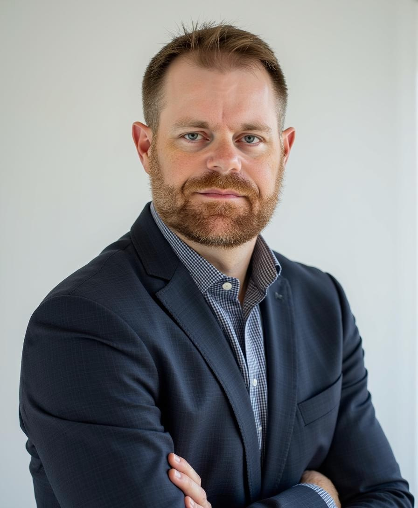

A framework born from three decades in media, a lifetime in athletics, and generations of family wisdom.

After three decades in media, a career as a sports coach, and roles spanning AI ethics, ad standards, and advisory boards, I've developed a framework that integrates these diverse experiences into a coherent approach to transformation.
My journey has taken me from the tallgrass prairies of Kansas to corporate boardrooms, from athletic fields to technology innovation labs. Through it all, I've been guided by principles passed down through generations of my family—principles that value authentic connections, natural development, and the wisdom that emerges when we truly recognize patterns across contexts.
The name "CW Standard" carries deep personal significance. The initials honor my grandfather, Claude W. Simmons, whose practical wisdom and innate ability to recognize patterns have informed this approach. My own middle name, Claude, connects me to this legacy, and the name continues through my son—creating a thread that weaves through generations.
If my grandfather were alive today, he might long for simpler times—not because he was a simple man, but because he understood the value of gut instinct, genuine connection, and seeing patterns that others missed. The CW Standard preserves these timeless principles while embracing the future he couldn't have imagined.
"Standard" reflects not rigid conformity, but rather foundational principles that guide authentic growth. It represents a way of being and seeing that creates both meaning and practical results—a standard to aspire to rather than a standardization that limits potential.
"You come from the blood of thoroughbreds"—this phrase, passed down through generations, reminds us that we inherit not just genetics but wisdom, perspective, and potential. The CW Standard honors this inheritance while creating new possibilities.
Three decades navigating the evolution of media from traditional to digital platforms, leading teams through complex transitions while preserving core values.
Lifelong involvement in athletics as both player and coach, developing methodologies for performance optimization and team development.
Leading AI task forces and developing ethical frameworks for emerging technologies, with a focus on preserving human wisdom.
Experience developing standards and policies that balance innovation with integrity, serving on advisory boards across diverse domains.
The CW Standard emerged from a lifetime of observing what works and what doesn't—not just what produces short-term results, but what creates sustainable transformation with meaning rather than simply change for its own sake.
"Everything I do, I want to leave better than I found it."
This simple statement guides my approach to coaching, consulting, and creating—whether working with teams, organizations, or individuals navigating their own transformations.
Primary platform for framework development, focusing on natural development and pattern recognition.
Applied practice space where methodology meets implementation through structured exercises and real-world applications.
Weekly newsletter exploring framework principles through stories, case studies, and practical applications.